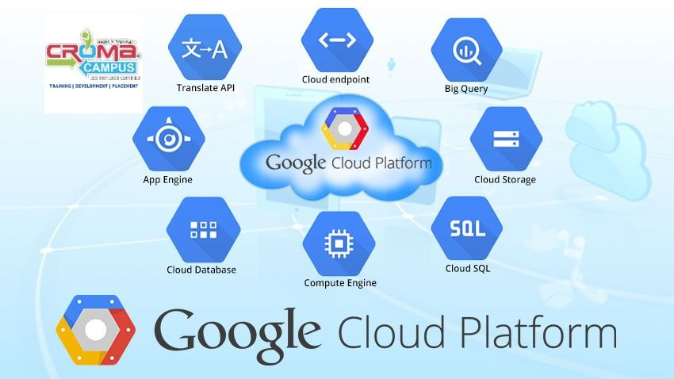
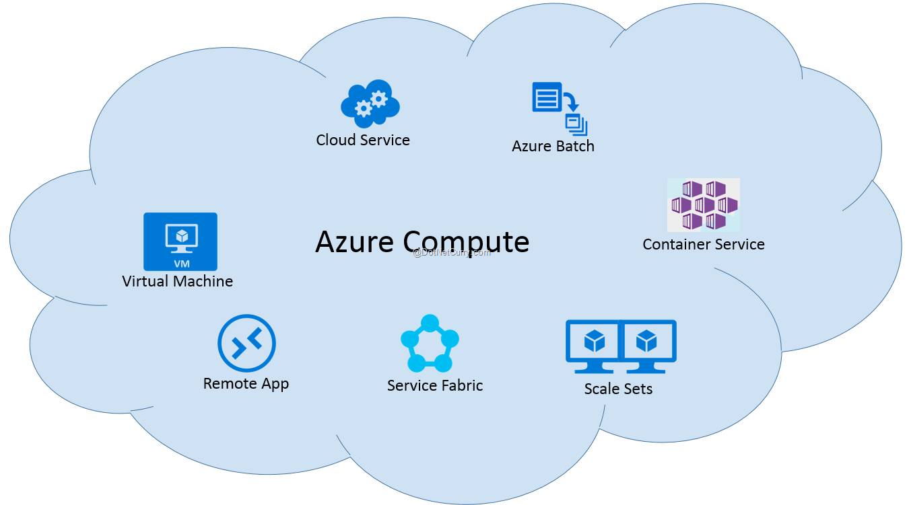
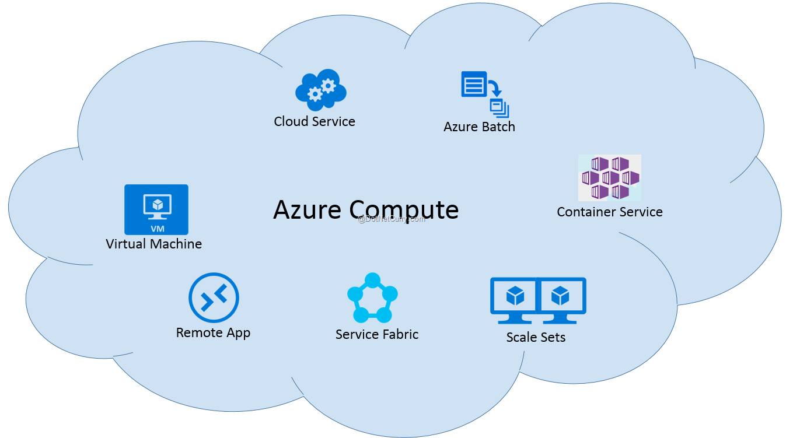

1.Бұлтты есептеулердің анықтамасын беріңіз.
2.Бұлтты қызметтердің түрлерін (IaaS, PaaS, SaaS) сипаттаңыз.
3.Бұлтты технологиялардың артықшылықтары мен кемшіліктерін талдаңыз.
4.AWS, Azure, Google Cloud платформаларының ерекшеліктерін салыстырыңыз.
5.Бұлтты қызметтерді пайдалану үшін қажетті құралдарды анықтаңыз.
 
